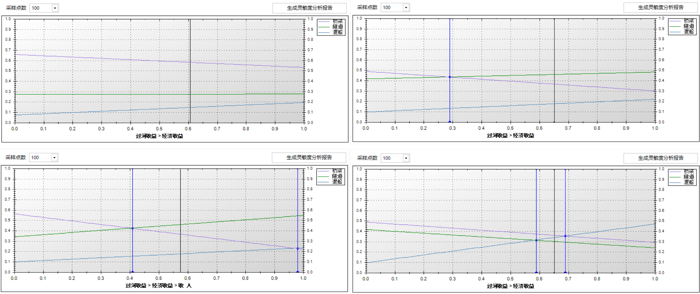

转载自张建华的博客, 原文链接: http://www.jeffzhang.cn/yaahp-sensitivity-analysis-intro/.
概述
AHP是一种经典的多属性决策方法, 已经广泛地应用于众多领域. 但是, 由于AHP很大程度上依赖于决策者主观判断, 而这些主观判断本身是一个模糊值, 不能准确地反映客观情况, 并且客观情况也可能随着环境/时间的改变而变化, 所以在很多情况下决策者不但要求得到决策结果, 也即备选方案排序结果, 还需要了解决策结果的稳定性, 也就是层次模型中某些要素的权重变化将会对决策结果产生什么样的影响.
这种备选方案排序结果随某属性权重变化而变化的程度就是灵敏度. 如果某属性权重发生较小的变化后, 备选方案的排序结果就会发生变化, 说明决策结果对该属性的灵敏度较高, 也就是说决策结果不稳定.
作用
通过灵敏度分析, 决策者可以掌握属性权重变化对决策结果的影响及影响的程度, 帮助决策者做出正确的判断.
通过灵敏度分析获得的信息
1) 基本信息
使用yaahp的灵敏度分析功能, 可以获得以下基本信息:
- 备选方案权重值随某个属性权重变化的变化情况;
- 备选方案排序结果随某个属性权重变化的变化情况.
2) 统计信息
根据基本信息, 经过统计还可以得到以下信息:
- 各个属性对决策结果的影响程度;
- 保证备选方案排序结果不变条件下, 各属性权重的变化范围.
利用权重变化图判断决策结果的稳定性
本节利用yaahp灵敏度分析功能提供的权重变化图说明决策结果的稳定性.图1是yaahp的灵敏度分析窗口, 右上方的权重变化图中显示出各个备选方案随某属性权重变化而变化的曲线.
图1 灵敏度分析
图2是四种不同稳定性的权重变化图对比, 各曲线的说明如下:
- 黑色竖线与x轴交点, 表示得到实际决策结果时属性的权重;
- 蓝色竖线与x轴交点是变化点, 表示属性权重值超过这个点后, 决策结果会发生变化;
- 其他颜色的斜线是各个备选方案随属性权重变化而变化的曲线.

图2 权重变化图
决策结果的稳定性可以从权重变化图上看出:
如果图中没有蓝色竖线, 说明各备选方案的权重排序(顺序)不会随着这个属性权重的变化而变化, 是稳定的;
如果存在蓝色竖线, 可以根据黑线左右两侧最近的蓝线确定一个范围, 在这个范围内属性权重变化不会影响决策结果变化, 根据这个范围的大小确定稳定性.
根据以上的两点, 图2中四张权重变化图所对应的稳定性如下:
- 图2左上图中没有蓝线, 无论该属性权重如何变化都不会影响决策结果, 是稳定的;
- 图2右上图中, 在黑线只有左侧一条蓝线, 所以这个属性的不影响决策结果的权重变化范围就是从蓝线(约0.3)起到最右侧(1.0);
- 图2左下图, 其中有两条蓝线, 所以这个属性的不影响决策结果的权重变化范围就是从左侧蓝线(约0.41)起到右侧蓝线(约0.98);
- 图2右下图中, 这个属性的不影响决策结果的权重变化范围就是从左侧蓝线(约0.58)起到右侧蓝线(约0.68), 四个图中它的稳定性最差.
更多
更多的新版灵敏度分析功能资料请参考yaahp手册”灵敏度分析”和 yaahp视频教程中的”灵敏度分析”视频.